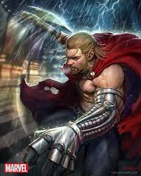
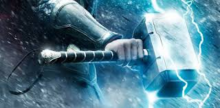
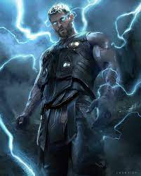
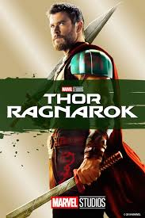
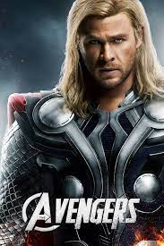
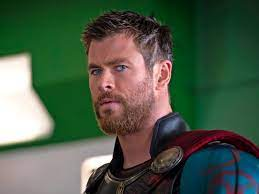
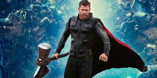
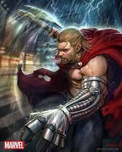
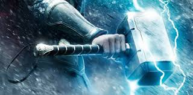
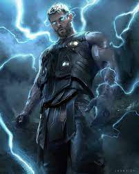
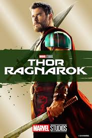
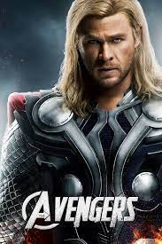
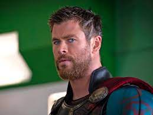
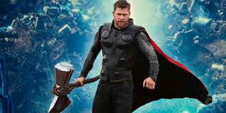
Thor Odinson is the Asgardian God of Thunder, the former king of Asgard and New Asgard, and a founding member
of the Avengers. When his irresponsible and impetuous behavior reignited a conflict between Asgard and
Jotunheim, Thor was denied the right to become king, stripped of his power, and banished to Earth by Odin.
While exiled on Earth, Thor learned humility, finding love with Jane Foster, and helped save his new friends
from the Destroyer sent by Loki. Due to his selfless act of sacrifice, Thor redeemed himself in his father's
eyes and was granted his power once more, which he then used to defeat Loki's schemes of genocide.
Upon being welcomed back to Asgard as a hero, Thor was forced to return to Earth in order to retrieve
Loki after he had survived a fall through a black hole and had begun his attempt at world domination, having
taken possession of the Tesseract. Thor joined the Avengers under the guidance of S.H.I.E.L.D. and stood with
them to stop the schemes of his own adopted brother, eventually following the newly formed team as they battled
against Loki's army of the Chitauri during the Battle of New York until Loki was eventually defeated by the
Avengers, captured and returned onto Asgard to await justice for his crimes against Earth.Thor returned
to Asgard having defeated his brother's schemes, as he then helped the Asgardian Armies restore peace
across all of the Nine Realms during the War of the Nine Realms. However, the peace proved to be short-lived
as Thor then fought the Dark Elves during the Second Dark Elf Conflict as they had attempted to plunge the
Nine Realms into eternal darkness. During these events, Thor was reunited with Jane Foster who had become
host to the Aether and a target of the Dark Elves, with Thor being forced to free Loki from imprisonment
for his aid. Eventually, the Aether was removed from Foster's body and Loki seemingly sacrificed Thor from Kurse,
leading to the Dark Elves and Malekith's defeat.
Thor renounced his claim to the throne and left Asgard for Earth so he could stay with Foster. During
his stay on Earth, Thor helped the Avengers once again, this time in their attempts to locate Loki's
Scepter. This also lead to him joining the fight against HYDRA. Following HYDRA's defeat and the capture
of Baron Wolfgang von Strucker, the team had to stop the newly created Ultron, a rogue invention
inadvertently created by Tony Stark which had threatened to wipe out all of humanity and replace
it with its own Ultron Sentries. Once Ultron had been defeated, Thor promised his Avengers allies
that he would return and went back to Asgard to investigate the visions he saw when being manipulated
by Scarlet Witch of the Infinity Stones. In his investigations, Thor also discovered that Loki was
still alive and had usurped Odin's royal throne during Thor's absence.
| Full name | Thor Odison |
| Species: | Asgardian |
| Place of origin: | Asgard |
| Team affiliations: | Avengers
Warriors Three Thor Corps God Squad Avengers Unity Squad |
| Notable aliases Siegmund: | Siegfried
Dr. Donald Blake Jake Olson Sigurd Jarlson Eric Masterson Odinson Herald of Thunder |
| Abilities: | Superhuman strength
Speed Durability Longevity Inter-dimensional teleportation Electricity manipulation Flight Weather manipulation |